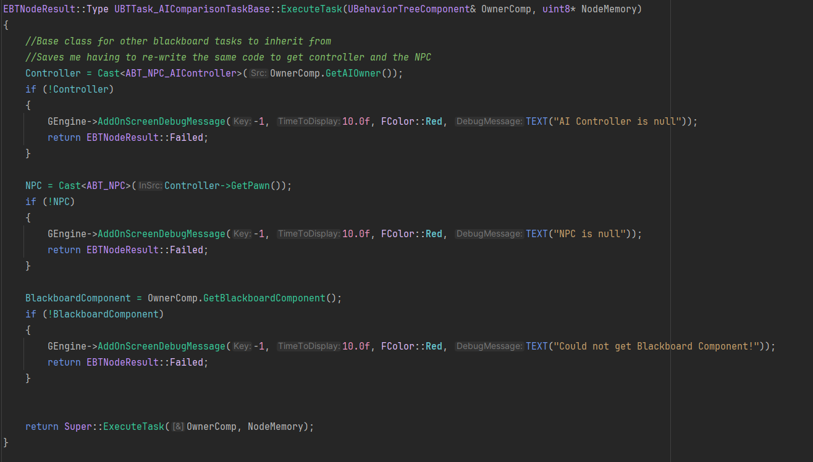
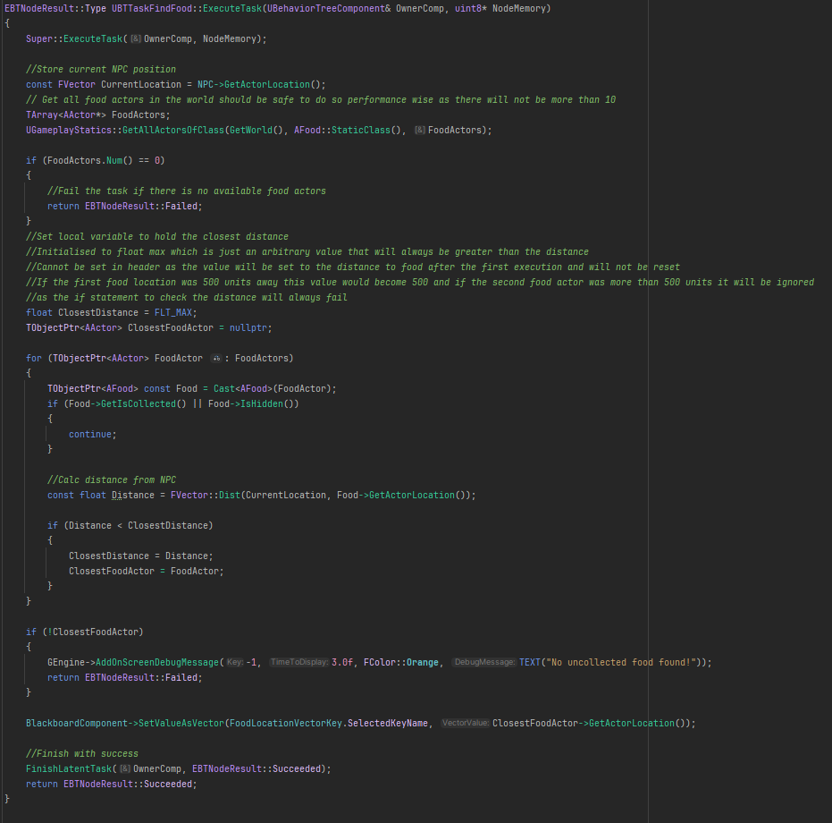

About the project
This project aimed to demonstrate the differences between behaviour trees and utility AI in Unreal Engine 5 using the built-in assets within the engine. Developed as part of my dissertation, the project is built around comparative testing through the creation of a survival environment intended to encourage adaptable behaviour in order to survive a 5-minute simulation. The camera follows an AI controlled NPC around the level completing tasks determined by their respective framework to maintain internal stats to survive.
UE5 AI NPC Comparison

Behaviour Tree Base Task Code
Click to expand image.

Find Food Task
Click to expand image.

Behaviour Tree
Click to expand image.

Utility State Tree
Click to expand image.
What I learned
Not only was this my first experience writing C++ in Unreal Engine, it was my first time using dedicated decision-making frameworks to program AI behaviour. This required adapting
my C++ programming skills developed from previous projects to work within the Unreal Engine framework and learning how to structure code to work with the engine's AI systems. I also gained a
deeper understanding of the differences between behaviour trees and utility AI, and how to implement both in Unreal Engine 5.
Problems Faced
One of the key challenges we faced during this project was the learning process of adapting to C++ programming within Unreal Engine, as well as understanding how to effectively use behaviour trees and utility AI to create adaptable NPC behaviour. This required a lot of experimentation and iteration to get the desired results, as well as troubleshooting and debugging to resolve issues that arose during development. Additionally, ensuring that both AI systems behaved the same in terms of behaviour was a challenge, as they required different approaches to achieve the same results.
Conclusion
Overall, this project was a valuable learning experience that helped me develop my skills in AI prograaming within Unreal Engine, as well as my understanding of different AI decision-making frameworks. It also provided insight into the strengths and weaknesses of behaviour trees and utility AI, and how to develop effective NPC behaviour using both approaches.